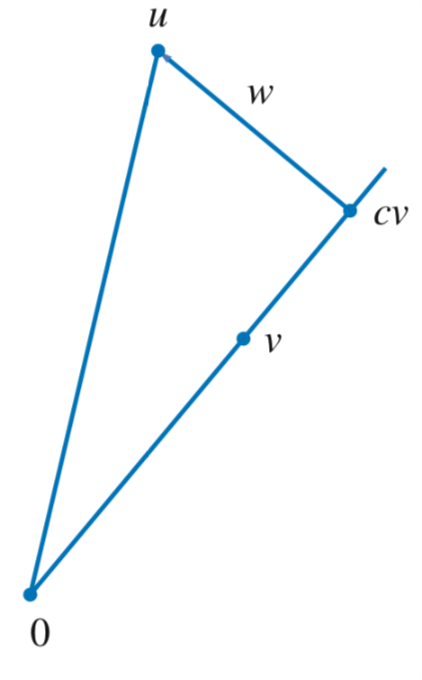

内积与范数
1 内积
\(x=(x_{1},\ldots ,x_{n}) \in \mathbf{R}^{n}\)的范数为：
\begin{equation} \label{eq:1} ||x|| = \sqrt{x_1^2 + \ldots + x_n^2} \end{equation}范数在\(\mathbf{R}^{n}\)上不是线性的，为了把线性引入讨论，定义点积：
对于\(x,y\in \mathbf{R}^{n}\)，\(x\)和\(y\)的点积\(x\cdot y\)定义为：
\begin{equation} \label{eq:2} x\cdot y = x_{1}y_{1} + \ldots x_{n}y_{n} \end{equation}其中\(x = (x_{1},\ldots ,x_{n})\)，\(y = (y_{1},\ldots ,y_{n})\)
注意\(\mathbf{R}^{n}\)中两个向量的点积是一个数。对所有的\(x\in \mathbf{R}^{n}\)，均有\(x\cdot x = ||x||^{2}\)，\(\mathbf{R}^{n}\)上的点积具有如下性质：
- 对所有\(x\in \mathbf{R}^{n}\)，均有\(x\cdot x \geq 0\)
- \(x\cdot x = 0\)，当且仅当\(x = 0\)
- 对于固定的\(y\in \mathbf{R}^{n}\)，\(\mathbf{R}^{n}\)到\(R\)的将\(x\in \mathbf{R}^{n}\)变为\(x\cdot y\)的映射是线性的。
- 对所有\(x,y\in \mathbf{R}^{n}\)，有\(x\cdot y = y\cdot x\)
内积是点积的推广。定义内积就是抽象化点积的过程：
\(V\)上的内积就是一个函数，把\(V\)中的元素的每个有序对\(u,v\)都映成一个数\(\langle u,v \rangle\) 并且具有以下性质：
- 对所有的\(v\in V\)，有\(\langle v,v \rangle \geq 0\)
- \(\langle v,v \rangle = 0\)，当且仅当\(v=0\)
- 对所有\(u,v,w\in V\)，均有\(\langle u+v,w \rangle = \langle u,w \rangle + \langle v,w \rangle\)
- 对所有\(\lambda\in \mathbf{F}\)和所有\(u,v\in V\)，有\(\langle \lambda u,v \rangle = \lambda \langle u,v \rangle \)
- 对所有\(u,v\in V\)，有\(\langle u,v \rangle = \overline{ \langle v,u \rangle } \)
\(\mathbf{F}^{n}\)上的欧几里得内积定义为：
\begin{equation} \label{eq:3} \langle (w_{1},\ldots ,w_{n}),(z_{1},\ldots ,z_{n}) \rangle = w_{1}\bar{z_{1}} + \ldots + w_{n}\bar{z_{n}} \end{equation}若\(c_{1},\ldots ,c_{n}\)均为正数，则可以定义\(\mathbf{F}^{n}\)上的内积：
\begin{equation} \label{eq:4} \langle (w_{1},\ldots ,w_{n}),(z_{1},\ldots ,z_{n}) \rangle = c_{1}w_{1}\bar{z_{1}} + \ldots + c_{n}w_{n}\bar{z_{n}} \end{equation}在定义区间\([-1,1]\)上的实值连续函数构成的向量空间上可定义内积如下：
\begin{equation} \label{eq:5} \langle f,g \rangle = \int_{-1}^{1}f(x)g(x) \mathrm{d} x \end{equation}在\(\mathcal{P}(\mathbf{R})\)上可定义内积如下：
\begin{equation} \label{eq:6} \langle p,q \rangle = \int_{0}^{\infty}p(x)q(x)e^{-x} \mathrm{d}x \end{equation}内积空间就是带有内积的向量空间 \(V\)
内积空间最重要的例子是\(\mathbf{F}^{n}\)，当我们说\(\mathbf{F}^{n}\)是内积空间的时候，我们总假设采用的是欧几里得内积。
- 对每个确定的\(u\in V\)，将\(v\)变为\(v,u\)的函数是\(V\)到\(\mathbf{F}\)的线性映射。
- 对每个\(u\in V\)，均有\( \langle 0,u \rangle = 0\)
- 对每个\(u\in V\)，均有\( \langle u,0 \rangle = 0\)
- 对所有\(u,v,w\in V\)均有\( \langle u,v+w \rangle = \langle u,v \rangle + \langle u,w \rangle\)
- 对所有\(\lambda\in \mathbf{F}\)和所有\(u,v\in V\)均有\( \langle u,\lambda v \rangle = \bar{\lambda} \langle u,v \rangle\)
2 范数
对于\(v\in V\)，\(v\)的范数\(\|v\| = \sqrt{\langle v,v \rangle } \)
若\((z_{1},\ldots ,z_{n}) \in \mathbf{F}^{n}\)，则：
\begin{equation} \label{eq:7} \| (z_{1},\ldots ,z_{n}) \| = \sqrt{ |z_{1}|^{2} + \ldots + |z_{n}|^{2}} \end{equation}在\([-1,1]\)上的实值连续函数构成的向量空间中有：
\begin{equation} \label{eq:8} \| f \| = \sqrt{\int_{-1}^{1} (f(x))^{2} \mathrm{d}x } \end{equation}范数的基本性质：
设\(v\in V\)
- \(\| v\| = 0\) 当且仅当\(v=0\)
- 对所有\(\lambda\in \mathbf{F}\)均有\(\| \lambda v\| = |\lambda| \|v\|\)
通常，处理范数的平方要比直接处理范数更容易。
两个向量\(u,v\in V\)是正交的，如果\( \langle u,v \rangle = 0\)
若\(u,v\)是\(\mathbf{R}^{2}\)中的非零向量，则：
\begin{equation} \label{eq:9} \langle u,v \rangle = \| u \| \| v\|\cos \theta \end{equation}其中\(\theta\)是\(u\)和\(v\)的夹角，显然在平面几何的意义下，正交意味着垂直。
- \(0\)正交与\(V\)中的任意向量。
- \(0\)是\(V\)中唯一一个与自身正交的向量。
设\(u\)和\(v\)是\(V\)中的正交向量，则\( \| u+v \|^{2} = \| u \|^{2} + \| v \|^{2} \)
设\(u,v\in V\)，且\(v\neq 0\)，我们想把\(u\)写成\(v\)的标量倍加上一个正交与\(v\)的向量\(w\)。如图1所示：

图 1: 正交分解
为了揭示如何将\(u\)写成\(v\)的标量倍加上一个正交于\(v\)的向量，令\(c\in \mathbf{F}\)表示一个标量，则： \[u = cv + (u-cv)\] 因此需要选取\(c\)使得\(v\)正交于\(u-cv\)，也就是说我们希望： \[0 = \langle u-cv,v \rangle = \langle u,v \rangle - c \| v \|^{2} \] 上式表明\(c\)应该是\[\langle u,v \rangle / \| v \|^{2} \] 从而 \[ u = \frac{\langle u,v \rangle }{\| v \|^{2} }v + (u - \frac{\langle u,v \rangle }{\| v \|^{2} } v) \] 上式把\(u\)写成了\(v\)的标量倍加上一个正交于\(v\)的向量。
设\(u,v\in V\)且\(v\neq 0\)，令\(c = \frac{\langle u,v \rangle }{\| v \|^{2} }, w = u - \frac{\langle u,v \rangle }{\| v \|^{2} } v \)则\(\langle w,v \rangle = 0 \)，且\(u = cv + w\)
设\(u,v\in V\)，则 \( | \langle u,v \rangle | \leq \| u \| \| v \| \)，等号成立当且仅当\(u,v\)之间存在标量倍的关系。
我们把\(u\)分解为： \[u = w + \frac{\langle u,v \rangle }{\| v \|^{2} } v\] 其中\(w\)正交与\(v\)，根据勾股定理，我们有：
\begin{eqnarray} \label{eq:11} \| u \|^{2} &=& \bigg\| \frac{\langle u,v \rangle }{\| v \|^{2} } v \bigg\|^{2} + \| w \|^{2} \\ &=& \frac{ \|\langle u,v \rangle \|^{2} }{\| v \|^{2} } + \| w \|^{2} \\ &\geq & \frac{ \|\langle u,v \rangle \|^{2} }{\| v \|^{2} } \end{eqnarray}柯西施瓦茨不等式的例子
若\(x_{1},\ldots ,x_{n},y_{1},\ldots ,y_{n}\in \mathbf{R}\)，则：
\begin{equation} \label{eq:12} |x_1y_1 + \ldots x_ny_n|^2 \leq (x_1^2 + \ldots x_n^2)(y_1^2 + \ldots + y_n^2) \end{equation}若\(f,g\)均为\([-1,1]\)上的实值连续函数，则：
\begin{equation} \label{eq:13} \bigg\vert \int_{-1}^{1}f(x)g(x)dx \bigg\vert^{2} \leq \bigg(\int_{-1}^{1} (f(x))^{2}dx\bigg) \bigg(\int_{-1}^{-1} (g(x))^{2}dx\bigg) \end{equation}设\(u,v\in V\)，则\( \| u + v \| \leq \| u \| + \| v \| \)，等号成立当且仅当\(u,v\)之一是另一个的标量倍。
所以 \( \| u + v \| \leq \| u \| + \| v \| \)
设\(u,v\in V\)，则\( \| u + v \|^{2} + \| u-v \|^{2} = 2( \| u \|^{2} + \| v \|^{2}) \)